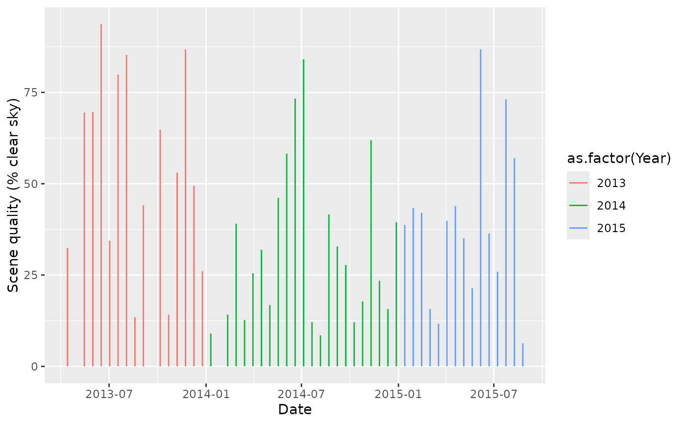

Imports and tidies CSV files exported from EarthExplorer into data.frames and annotates missing fields.
Details
The EarthExplorer CSV file can be produced from the search results page. Above the results click on 'export results' and select 'comma (,) delimited'.
Note that only a subset of columns is imported which was deemed interesting. Please contact the maintainer if you think an omited column should be included.
Examples
library(ggplot2)
ee <- readEE(system.file("external/EarthExplorer_LS8.txt", package = "RStoolbox"))
## Scenes with cloud cover < 20%
ee[ee$Cloud.Cover < 20,]
#> Landsat.Scene.Identifier WRS.Path WRS.Row Data.Category Cloud.Cover
#> 6 LC82240632015157LGN00 224 63 NOMINAL 13.20
#> 27 LC82240632014186LGN00 224 63 NOMINAL 15.94
#> 40 LC82240632013327LGN00 224 63 NOMINAL 13.19
#> 46 LC82240632013215LGN00 224 63 NOMINAL 14.72
#> 49 LC82240632013167LGN00 224 63 NOMINAL 6.35
#> Station.Identifier Day.Night Data.Type.Level.1 Date.Acquired Sun.Elevation
#> 6 LGN DAY L1T 2015/06/06 51.98871
#> 27 LGN DAY L1T 2014/07/05 51.01591
#> 40 LGN DAY L1GT 2013/11/23 61.83434
#> 46 LGN DAY L1T 2013/08/03 54.43226
#> 49 LGN DAY L1T 2013/06/16 51.64735
#> Sun.Azimuth Geometric.RMSE.Model.X Geometric.RMSE.Model.Y
#> 6 43.59274 6.244 5.663
#> 27 44.79093 5.452 5.420
#> 40 126.95937 0.000 0.000
#> 46 51.68815 5.631 5.840
#> 49 42.59918 6.377 5.862
#> Display.ID Ordering.ID
#> 6 LC82240632015157LGN00 LC82240632015157LGN00
#> 27 LC82240632014186LGN00 LC82240632014186LGN00
#> 40 LC82240632013327LGN00 LC82240632013327LGN00
#> 46 LC82240632013215LGN00 LC82240632013215LGN00
#> 49 LC82240632013167LGN00 LC82240632013167LGN00
#> Download.Link
#> 6 http://earthexplorer.usgs.gov/download/options/4923/LC82240632015157LGN00
#> 27 http://earthexplorer.usgs.gov/download/options/4923/LC82240632014186LGN00
#> 40 http://earthexplorer.usgs.gov/download/options/4923/LC82240632013327LGN00
#> 46 http://earthexplorer.usgs.gov/download/options/4923/LC82240632013215LGN00
#> 49 http://earthexplorer.usgs.gov/download/options/4923/LC82240632013167LGN00
#> Browse.Link Date Doy Year Satellite Num
#> 6 NA 2015-06-06 157 2015 LS8 8
#> 27 NA 2014-07-05 186 2014 LS8 8
#> 40 NA 2013-11-23 327 2013 LS8 8
#> 46 NA 2013-08-03 215 2013 LS8 8
#> 49 NA 2013-06-16 167 2013 LS8 8
## Available time-series
ggplot(ee) +
geom_segment(aes(x = Date, xend = Date, y = 0, yend = 100 - Cloud.Cover,
col = as.factor(Year))) +
scale_y_continuous(name = "Scene quality (% clear sky)")
